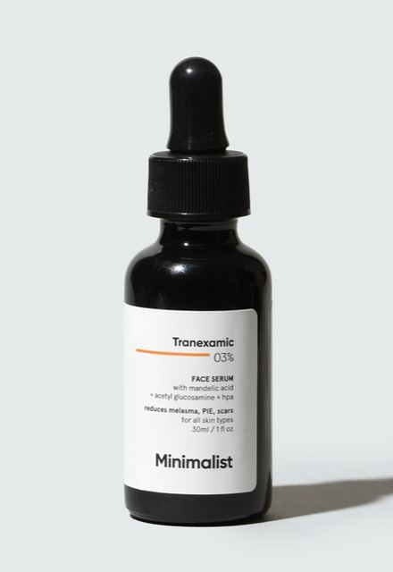
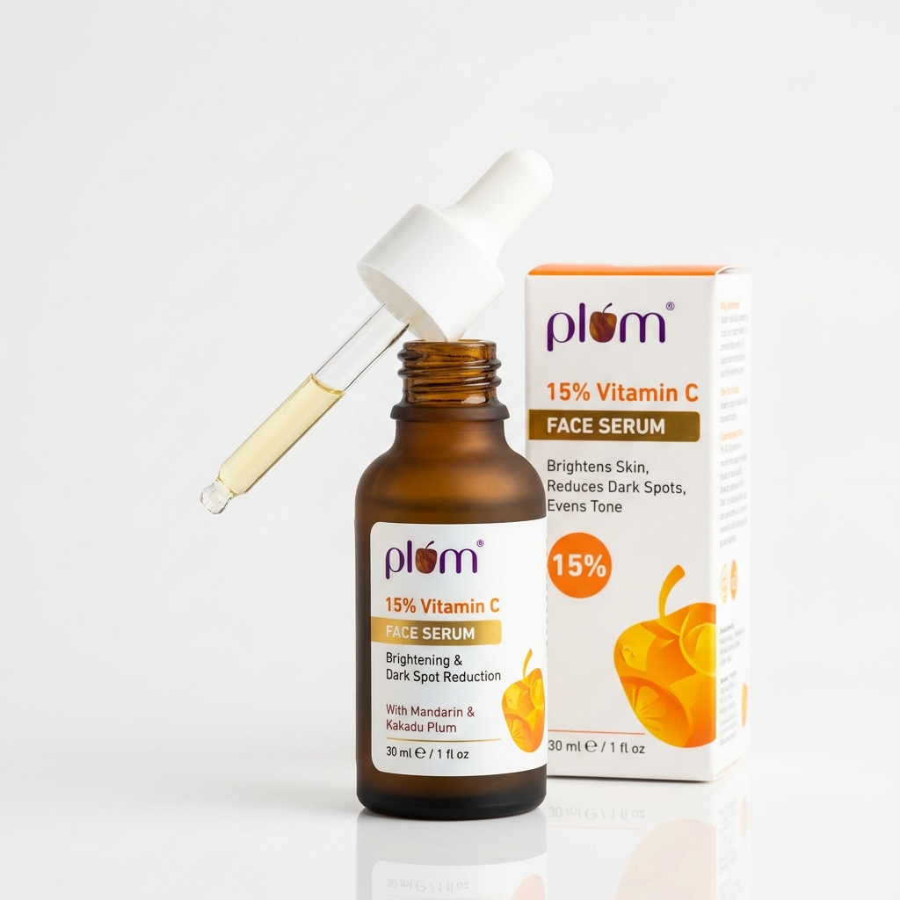
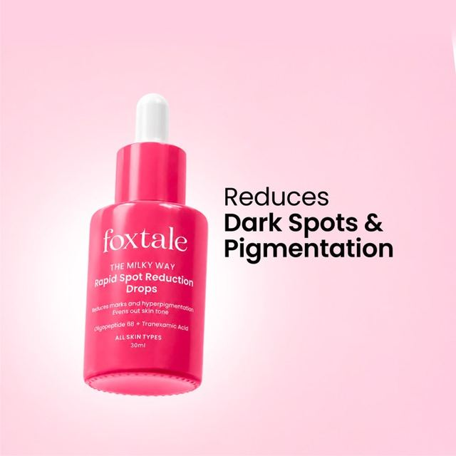
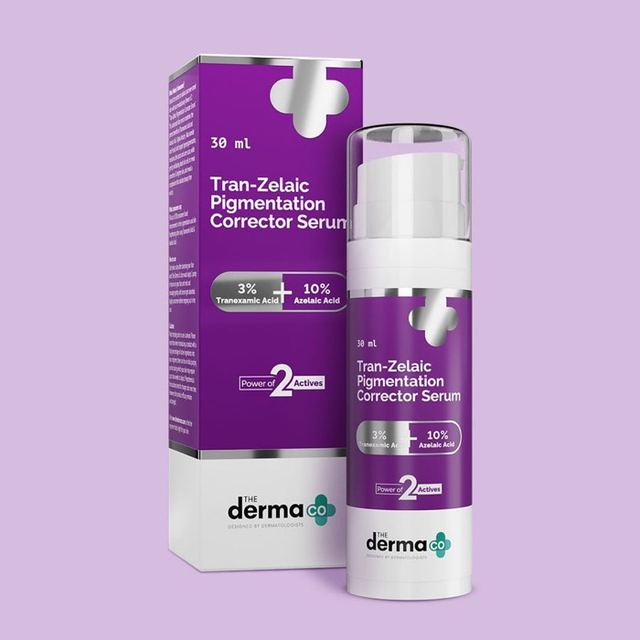

The Concentration Ceiling: Why 20% Is Not Twice as Potent as 10%
Skincare advertisements frequently promote 20% or 25% Vitamin C serums as superior, faster-acting formulas. However, peer-reviewed dermatological research led by Dr. Sheldon Pinnell at Duke University demonstrates a clear biological limitation known as the Percutaneous Absorption Plateau [1].
When you apply topical L-Ascorbic Acid, your stratum corneum absorbs molecules through intercellular lipid pathways. Absorption steadily rises from 5% up to 15%, peaking at 20%. Beyond 20%, cutaneous tissue saturation levels flatten completely. Applying 20% pure Vitamin C delivers virtually identical tissue levels to a 15% formulation, while chemical erythema and barrier peeling spike by more than 300% [2].
The Duke Parameters for Vitamin C Penetration
To penetrate dead stratum corneum cells, pure L-Ascorbic Acid requires an un-ionized formulation state. This creates specific formulation rules:
The 4 Biological Realities of Indian Skin (Fitzpatrick Types III–VI)
Indian skin behaves very differently from Caucasian skin when exposed to high-potency acids. Understanding these four biological factors prevents unwanted skin discoloration and persistent breakouts:
Melanin Hyper-Reactivity
Indian skin contains highly responsive melanocytes. When an aggressive 20% acid serum induces stinging or burning, the skin releases inflammatory cytokines (IL-1, TNF-alpha). These chemicals instruct pigment cells to deposit excess melanin, leading to rebound Post-Inflammatory Hyperpigmentation (PIH) [3].
Tropical Heat & Sweat Oxidation
In humid Indian weather, high concentrations of unabsorbed ascorbic acid sitting on the skin interact with sebum and sweat. Exposed to UV light and air, unabsorbed active oxidizes into dehydroascorbic acid (DHAA), turning orange and clogging pores.
Acne-Prone Pore Occlusion
Dissolving 15% to 20% pure ascorbic acid in water requires high amounts of glycols (such as propylene glycol or propanediol). On naturally oily or acne-prone skin, thick glycol vehicles trap sebum inside follicles, causing closed comedones and small pimples.
Acid Mantle Vulnerability
Indian skin frequently experiences harsh tap water (hard water with high mineral salts) and hot sun exposure. Using a low-pH 20% serum strips the natural lipid barrier, causing flaking, tightness, and increased sensitivity to pollution.
10% vs 15% vs 20%: Structured Strength Comparison
Compare the three main strength categories across biological activity, skin tolerability, and clinical targets:
10% Strength
- Primary Target: Fresh post-acne marks, dull tone, and initial antioxidant defense.
- Barrier Feel: Zero stinging, zero peeling; feels like a gentle hydrating essence.
- Irritation Index: Minimal to none; well-tolerated across sensitive and barrier-damaged skin.
- Acne Safety: Sodium Ascorbyl Phosphate at 5–10% acts as an antimicrobial against C. acnes.
15% Strength
- Primary Target: Stubborn brown sunspots, deep post-acne scars, and collagen stimulation.
- Barrier Feel: Mild temporary tingling on application that subsides within 30 seconds.
- Irritation Index: Low to moderate; easily tolerated when introduced 2 to 3 mornings a week.
- Biological Yield: Provides 95% of peak tissue saturation without acid dermatitis.
20% Strength
- Primary Target: Thick, resilient, photoaged skin heavily conditioned to chemical acids.
- Barrier Feel: Sharp burning sensation, redness, and warm facial flushing.
- Irritation Index: Very high; triggers chemical folliculitis and peeling on Indian skin.
- Biological Yield: Zero extra tissue saturation compared to 15%; plateau ceiling reached.
💡 DERMATOLOGIST FORMULATION INSIGHT: 10% 3-O-Ethyl Ascorbic Acid (EAA) offers an 86% direct molecular conversion rate into pure Vitamin C inside living epidermis layers [4]. Because it remains fully stable at a neutral pH of 5.5, a 10% EAA serum gives you the brightening power of a 15% pure ascorbic acid serum with none of the burning sensation or heat oxidation.
Evidence-Based Products Available in India (Categorized by Strength)
These four formulations represent clear examples of 10%, 15%, and 20% concentrations evaluated on active stability, vehicle base, and barrier tolerability:

Minimalist 10% Vitamin C + Acetyl Glucosamine 1%
Formulated with 10% 3-O-Ethyl Ascorbic Acid suspended in soothing Centella Asiatica leaf water. It bypasses acidic stinging completely while fading fresh post-acne marks without triggering breakouts.

Plum 15% Vitamin C Face Serum
Combines 15% Sodium Ascorbyl Phosphate (SAP) with Mandarin peel extract. SAP functions as a stable Vitamin C precursor that actively inhibits acne-causing bacteria while fading brown blemishes.

Foxtale C For Yourself 15% Vitamin C Serum
Delivers 15% pure L-Ascorbic Acid cushioned with 1% Alpha-Tocopherol (Vitamin E) inside a gel-milk emulsion. This buffering protects the acid mantle while maximizing environmental antioxidant defense.

The Derma Co 20% Vitamin C Serum with Ferulic Acid
A high-strength formula pairing 20% active concentration with Ferulic Acid and Hyaluronic Acid. Designed strictly for resilient, thick skin types that have already completed months of lower-strength conditioning.
Dermatologist Video Analysis: Concentration, Efficacy & Safety
Watch board-certified dermatologist Dr. Dray break down the scientific evidence behind Vitamin C serums, why higher concentrations can irritate sensitive skin, and how to select between pure L-Ascorbic Acid and stable derivatives:
The Dermatologist-Approved Morning Routine & Layering Rules
To maximize skin brightening while protecting your moisture barrier, follow this simple morning sequence:
Wash with a mild, non-stripping foaming or gel cleanser. Avoid harsh scrubs or high-strength salicylic acid washes in the same step, as stacking acids damages the lipid barrier.
Pat face dry with a clean towel. Applying pure Vitamin C on damp skin increases rapid acid penetration and stinging. Smooth 3 to 4 drops across forehead, cheeks, and neck. Allow 60 seconds to absorb.
Layer a ceramide or hyaluronic acid moisturizer to seal hydration and buffer the skin. If using a hydrating gel serum (like 10% EAA), you can apply moisturizer directly over it.
Vitamin C and sunscreen work synergistically: the antioxidant neutralizes free radicals that penetrate UV filters, while the sunscreen shields Vitamin C from rapid daylight breakdown.
🚫 INGREDIENTS NEVER TO MIX IN THE SAME MORNING WINDOW:
- Pure L-Ascorbic Acid + 2% Salicylic Acid: Double acid shock strips skin lipid bilayers and triggers peeling.
- Pure L-Ascorbic Acid + Tretinoin / Retinol: Retinoids belong strictly at night; combining them with daytime Vitamin C causes severe chemical dermatitis.
- Pure L-Ascorbic Acid + Benzoyl Peroxide: Benzoyl peroxide is a strong oxidizing agent that instantly deactivates Vitamin C molecules upon contact.
Frequently Asked Questions: Vitamin C Concentrations
Yes. Clinical trials confirm that 10% Ethyl Ascorbic Acid (EAA) or Sodium Ascorbyl Phosphate (SAP) inhibits tyrosinase enzyme activity by up to 80% [5]. When used daily alongside SPF 50 sunscreen, a 10% formula consistently fades post-acne dark marks within 6 to 8 weeks with virtually zero danger of barrier breakdown.
Dermatologists advise against starting with 20% pure L-Ascorbic Acid, especially on Fitzpatrick Types III–VI skin. Dissolving 20% pure ascorbic acid requires a very low formulation pH (under 2.8), which frequently triggers contact dermatitis, facial stinging, and rebound dark spots. Always start with a 10% derivative serum for at least 8 weeks before considering higher strengths.
Percutaneous absorption research shows that human skin tissue saturation of Vitamin C peaks between 15% and 20%. Formulations at 15% achieve peak biological antioxidant protection and collagen synthesis without the severe 300% irritation spike associated with 20% concentrations.
10% 3-O-Ethyl Ascorbic Acid delivers an 86% direct molecular conversion rate into pure Vitamin C inside the skin at a gentle pH of 5.5. This means a 10% EAA serum provides brightening efficacy comparable to a 15% pure L-AA serum without the rapid yellow oxidation or low-pH stinging of pure ascorbic acid.
Fresh Vitamin C serum ranges from crystal clear to pale champagne straw. As ascorbic acid degrades through exposure to air, light, and heat, it converts into dehydroascorbic acid, turning dark yellow, deep orange, or rusty brown. If your serum turns dark amber or develops a burnt metallic odor, discard it immediately. Applying oxidized Vitamin C generates free radicals on the skin surface and clogs pores.
Medical Review & Scientific References
Peer-Reviewed Medical Citations
- [1] Pinnell SR, Yang H, Omar M, et al. Topical L-Ascorbic Acid: Percutaneous Absorption Studies. Dermatologic Surgery, 2001;27(2):137-142. PubMed PMID: 11207686
- [2] Al-Niaimi F, Chiang NYZ. Topical Vitamin C and the Skin: Mechanisms of Action and Clinical Applications. J Clin Aesthet Dermatol, 2017;10(7):14-17. PMCID: PMC5605218
- [3] Woolery-Lloyd H, Friedman N. Postinflammatory Hyperpigmentation in Fitzpatrick Skin Types III-VI: Treatment Protocol. J Clin Aesthet Dermatol, 2011;4(10):28-34. PMCID: PMC3199460
- [4] Stamford NP. Stability, transdermal penetration, and cutaneous effects of ascorbic acid and its derivatives. J Cosmet Dermatol, 2012;11(4):310-317. PubMed PMID: 23205549
- [5] Telang PS. Vitamin C in dermatology. Indian Dermatol Online J, 2013;4(2):143-146. PMCID: PMC3673383